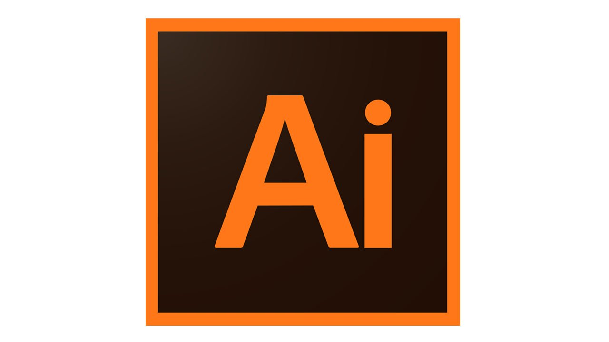
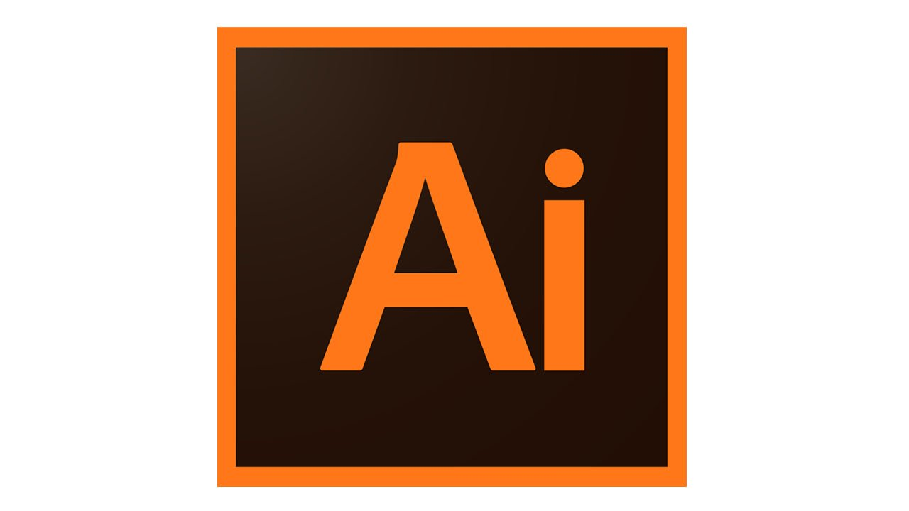

Mes Compétences
Toutes ces connaissances ont été acquises de différentes façons.
Elles ont été acquises durant mes études et d'autres par ma propre initiative
en essayant de mettre en place des solutions.
J’ai également relevé les défis organisés,
ce qui permet d’effectuer des recherches et aller encore plus loin.
J'ai realisé différents projets grâce à ces outils ci-dessous
 
